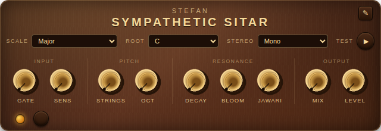
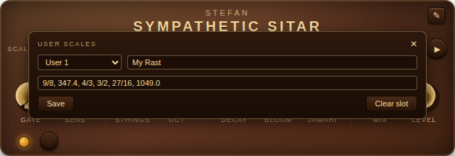

Underneath the playing strings of a real sitar lies a second set of strings the player never touches: the taraf, or sympathetic strings. They are tuned to the notes of the raga, and they ring on their own whenever the music passes over their pitch — a silvery halo that shadows every phrase.
Sympathetic Sitar gives that halo to any instrument. Send a guitar, a synth, a voice — anything — through it, and a bank of up to 48 tuned strings rings along with what you play. You choose the tuning: the strings follow the scale and key you pick, from familiar Western scales to Turkish makams and Hindustani ragas with their authentic in-between notes.
Play a note the strings know, and it blooms. Play a chord, and the whole bank shimmers back at you, slowly fading like a piano with the sustain pedal down. You are not adding an effect on top of your sound — you are playing a roomful of strings with it.
| Control | What it does |
|---|---|
| 1 SCALE | Which notes the strings are tuned to. 24 scales: fourteen Western (major, minors, modes, pentatonics, blues …), four Turkish makams (Rast, Uşşak, Hicaz, Saba) and six Hindustani ragas (Yaman, Bhairav, Bhairavi, Todi, Marwa, Malkauns) — the makams and ragas include their authentic in-between pitches that a piano cannot play — plus any you build yourself (see Make your own scale). |
| 2 ROOT | The key the scale is built on: C through B. Match it to your song. |
| 3 STEREO | How the strings spread across the stereo image. Mono keeps them centred; Linear lays them low-to-left, high-to-right; Wide alternates strings far left and far right. The Narrow variants are the same layouts at half width. |
| 4 TEST | Plucks each active string in turn, low to high, a couple of seconds each — hear the whole tuning without playing a note. Stops by itself at the last string, or press again to stop early. |
Keeps hiss and hum from ringing the strings between phrases.
How easily the strings ring.
How many strings ring, counted from the root upward (1–48).
The octave the string bank starts in (2–6).
How long the strings ring on after you stop.
Lets ringing strings excite each other through a shared bridge, the way a real sitar's tarafs do.
The buzzing bridge of a real sitar — a gentle, singing grit on the ringing strings. Adds character, not loudness.
The balance between your dry sound and the strings. Loudness stays even across the whole sweep.
Output volume trim, ±12 dB, after the mix.
The 24 built-in scales cover a lot of ground — but you can also define your own, with any intervals you like, including the microtonal pitches between the piano keys. Custom scales are saved with your pedalboard.

9/8 or 3/2, or a value
in cents — a number with a decimal point, such as
347.4. The root (1/1) is added for you, so
just list the notes above it.To change a scale, reopen the editor, choose its slot, edit and Save again; Clear slot removes it. Custom scales live in the pedalboard — save a MOD preset to carry one between projects.
Knob positions are given like a clock face: fully left is 7 o'clock, the middle is noon, fully right is 5 o'clock.
The real-sitar experience: every phrase you play trails a silver shadow. Fingerpicked guitar practically turns into a different instrument.
The strings sit far above your notes, so only their harmonics ring — an airy sparkle floating over everything, close to a shimmer reverb but tuned to your song.
A few strings that barely stop ringing. Play the root and fifth a couple of times to charge them up, then improvise over the drone with your hands free.
The makams tune strings to pitches between the piano keys. Press TEST and listen — then play simple lines and let the halo answer with intervals your frets don't have.
Barely-there resonance that widens and sweetens a part without announcing itself. If you can point at the effect, turn MIX down a hair more.
After every scale or root change, TEST plays you the exact tuning of the halo. It is the fastest way to learn what the makams and ragas sound like, too.
Strings ring at their own pitches no matter what you play. If the resonance clashes, ROOT or SCALE doesn't match the song. Chromatic scale follows anything — at the cost of focus.
Amp hiss and hum will happily ring the strings all day. Turn GATE up until nothing sounds when you are not playing — tails still ring out in full.
Beyond the 24 presets, the pencil (✎) editor in the top-right corner builds custom microtonal scales from ratios or cents — see Make your own scale. They save with the pedalboard.
With a bass-heavy source, the low strings can ring into mud. OCT 4 or 5 moves the whole bank above the muck, keeping just the sheen.
The pedal balances its own volume as STRINGS changes — many strings each ring slightly softer, so sweeping the knob never blows up the mix.
Download the build for your platform from the
GitHub Releases page —
each release ships a MOD Desktop bundle
(sitar-vX.Y.Z-linux-x86_64.tar.gz) and a MOD Dwarf bundle
(sitar-vX.Y.Z-dwarf-aarch64.tar.gz).
tar xzf sitar-vX.Y.Z-linux-x86_64.tar.gzsitar.lv2 folder into
~/Documents/MOD Desktop/lv2/scp -O -r sitar.lv2 root@192.168.51.1:/root/.lv2/
ssh root@192.168.51.1 'systemctl restart jack2 mod-ui'
Building from source (any LV2 host, macOS/other platforms) is covered in the project README.
3/2) or cents (like 347.4), and Save. It
joins the SCALE menu under “User” and is stored with
your pedalboard. See Make your own scale.| Format | LV2 audio plugin, mono in → stereo out |
|---|---|
| Strings | Up to 48 tuned resonators spanning four octaves above the root |
| Tunings | 24 scales: 14 Western, 4 Turkish makams, 6 Hindustani ragas (just intonation, with authentic neutral intervals) |
| Root range | C–B pitch classes, octaves 2–6 (C2 ≈ 65 Hz to top strings at C8 ≈ 4186 Hz) |
| Platforms | MOD Desktop (Linux x86_64), MOD Dwarf (aarch64), any LV2 host |
| License | ISC (free and open source) |
Sympathetic Sitar is free software built with the DISTRHO Plugin Framework. Manual edition July 2026 — for the plugin version it shipped with; see the GitHub release page for the latest.